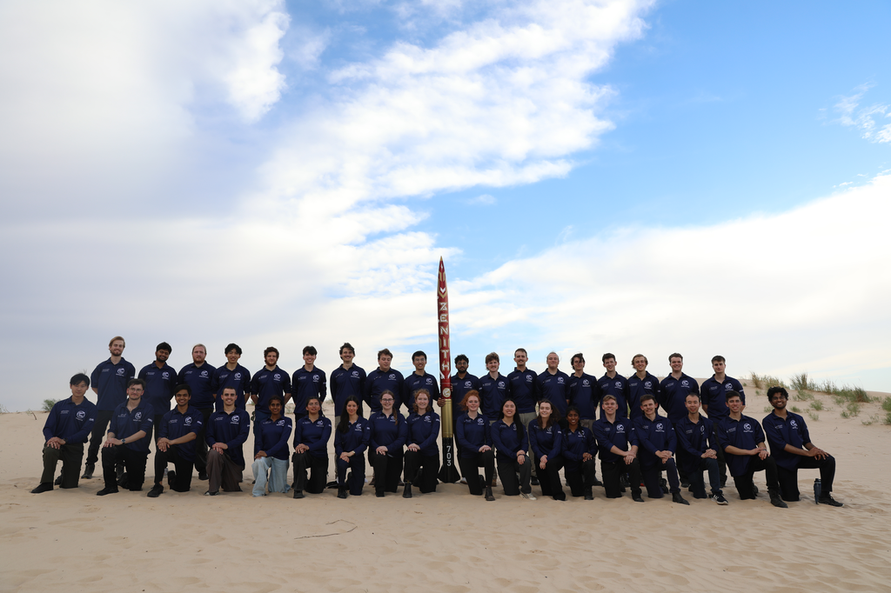

Back to Projects
Zenith @ IREC 2025 - Launch Operations & Competition Execution
Operational context

Zenith launch during the IREC 2025 campaign.
- Zenith hybrid rocket campaign at IREC 2025.
- Campaign ran June 1-14 with on-site integration, testing, and launch operations.
- Tight time constraints and high-pressure testing conditions.
Test & launch operations
- Worked on engine control and data-acquisition systems used for hot-fire testing and launch operations.
- Set up the launch pad and engine systems; performed pre-launch valve and sensor checks.
- Assisted with system diagnostics under tight time constraints.
- Contributed to last-minute software and hardware debugging to support launch attempts.
Pre-launch system rebuild (decision under uncertainty)


- During hot-fire testing, compounding electrical issues emerged.
- Initial inclination favored incremental fixes due to schedule pressure.
- After reviewing test data and failure modes with propulsion teammates, agreed a full rebuild was safer.
- Asked for help beyond the avionics team and mobilized 20+ teammates across subsections.
- Rebuilt system performed nominally during launch.
Competition & presentation
- Co-presented the control and telemetry architecture during the IREC podium session.
Outcome
- Launch to ~12,000 ft.
- Team received the Jim Furfaro Award for Technical Excellence and placed 2nd in category (140+ teams).